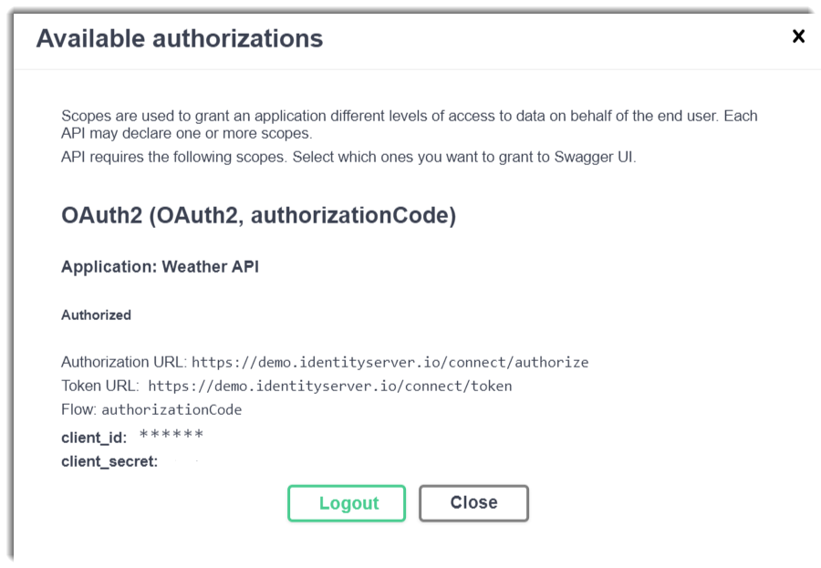

If you are using OAuth2, the recommendation for the OAuth working group is to update your web applications such us SPAs or JavaScript in order to use Authorization code flow + PKCE instead of implicit flow. With this approach you can remove the tokens from the URL for a much more secure flow. If you are not familiar with OAuth2, I recommend you this Pluralsigt course by Scott Brady.
If you are developing Web APIs, you should have heared about Swagger-UI
Swagger UI is a collection of HTML, Javascript, and CSS assets that dynamically generate beautiful documentation from a Swagger-compliant API. Swagger
In Asp.Net Core we have available a NuGet package called Swashbuckle.AspNetCore to provides an embedded version of the awesome Swagger-UI.
Normally our APIs are using some authorization mechanism to protect the access to their information. It’s very common to use JSON Web Tokens as an authorization mechanism. Once the user is logged in, each subsequetnt request will include a JWT, that allow our API to determine if the client can access to the resource that is permitted by this token.
Before Authorization code flow + PKCE, Implicit flow was the standard flow in order to obtain these JWT and provides access to the APIs in browser-based applications such us SPAs (Single Page Applications). As I told you before, you should avoid the use of Implicit flow in favor of Authorization code flow + PKCE. If someone ask you why it should avoid it, please refer to this link.
Some time ago, I made a pull request to support Authorization code flow + PKCE in Swashbuckle Asp.Net Core, so in this post I would like to show you how to configure Swashbuckle in order to use this authorization flow.
Geeting started
Disclaimer: I’m not going to show how to configure things like JWT authentication, settings, etc. and also I’m going to omit some code for brevety and I’m going to put focus only in how to configure Swashbuckle to support Authorization code + PKCE. At the end of the post you’ll have a link to my Github repository with a fully functional example using the identityserver demo.
We are going to create and ASP.NET Core Web Application using the API template from Visual Studio 2019:
In order to use Swashbuckle in our ASP.NET Core web applications, we need to install a NuGet package with Package Manager Console:
Install-Package Swashbuckle.AspNetCore -Version 5.3.2
Or using dotnet cli:
dotnet package add Swashbuckle.AspNetCore --version 5.3.2
We need to add the SwaggerGen services in our ConfigureServices method in the Startup.cs:
services
.AddTransient<IConfigureOptions<SwaggerGenOptions>, ConfigureSwaggerGenOptions>()
.AddSwaggerGen()
We need to create SwaggerGen options:
public class ConfigureSwaggerGenOptions : IConfigureOptions<SwaggerGenOptions>
{
...
public void Configure(SwaggerGenOptions options)
{
options.OperationFilter<AuthorizeOperationFilter>();
...
options.AddSecurityDefinition("OAuth2", new OpenApiSecurityScheme
{
Type = SecuritySchemeType.OAuth2,
Flows = new OpenApiOAuthFlows
{
AuthorizationCode = new OpenApiOAuthFlow
{
AuthorizationUrl = new Uri(discoveryDocument.AuthorizeEndpoint),
TokenUrl = new Uri(discoveryDocument.TokenEndpoint),
Scopes = new Dictionary<string, string>
{
{ _settings.Security.Jwt.Audience , "Balea Server HTTP Api" }
},
}
},
Description = "Balea Server OpenId Security Scheme"
});
}
...
}
The first important thing to remark is this line:
options.OperationFilter<AuthorizeOperationFilter>();
With this line, we instructs to swagger-ui to show a padlock in all operations that have been decorated with the AuthorizeAttribute:
An also de correct responses:
Next, we are configuring Swashbuckle to use an Authorization code flow using the authorization endpoint and the token endpoint.
Finally, we need to configure the middlewares:
app
.UseSwagger()
.UseSwaggerUI(setup =>
{
setup.SwaggerEndpoint($"/swagger/v1/swagger.json", "Version 1.0");
setup.OAuthClientId(appSettings.Security.Jwt.ClientId);
setup.OAuthClientSecret(appSettings.Security.Jwt.ClientSecret);
setup.OAuthAppName("Weather API");
setup.OAuthScopeSeparator(" ");
setup.OAuthUsePkce();
})
OAuthUsePkce() will do the magic and instructs swagger-ui to add the PKCE to the Authorization flow.
If you run the example, you will see an Authorize button:
Click on the Authorize button, a new window will be opened:
You’ll need to check the scope and then click on the Authorize button and Authorization code flow + PKCE will be initiated. You’ll be redirected to the IdentityServer4 demo. You’ll need to introduce the credentials:

If the authentication was sucessfully, you’ll be redirected again to the swagger-ui interface:

Close the modal windows and now the padlocks should be lock:
And now you cam make an authorization request to the Weather API.
If you can ensure that swagger-ui is using an Authorization code flow + PKCE, open the developer tools in your browser and inspect the networks calls or you can use a HTTP snifer like Fiddler:
You can download the complete example here
Conclusion
In this post I’ve tried to show how straightforward is to add Authorization code flow + PKCE in Swashbuckle Asp.Net Core. If you are using Implivit code flow, yI recommend you to change all your browser-based applications such us SPAs (Single Page Applications) in favor to the Authorization code flow + PKCE.


Comments